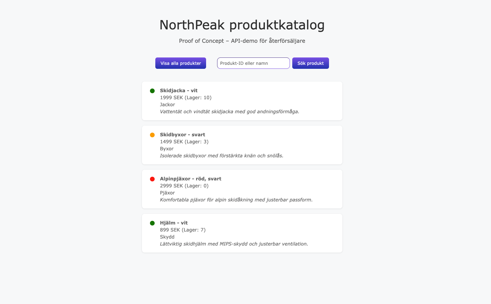

Product Catalog API
← BackGithub: https://github.com/malinanita/product-catalog-api
Technologies: Python, Flask, JavaScript, HTML, CSS, JSON
Project Description:
A proof-of-concept product catalog application built with Python and Flask, featuring REST-style API endpoints for fetching and searching products. The frontend communicates with the backend through JavaScript fetch requests and dynamically renders product data in the interface. The API supports:
- Retrieving a list of all products
- Retrieving individual products by ID
- Searching for products by name using query parameters
The frontend also includes visual stock status indicators based on inventory levels. Product data is stored in a local JSON file and returned as structured JSON responses. The frontend includes visual stock indicators and simple product filtering functionality to simulate a lightweight retailer product catalog. This project strengthened my understanding of backend development with Flask, API design, request handling, JSON data structures, and frontend-backend communication.
Product Search & Inventory
